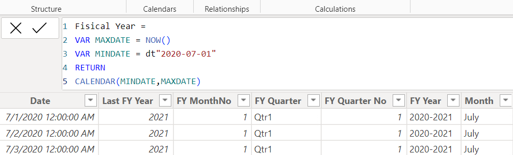
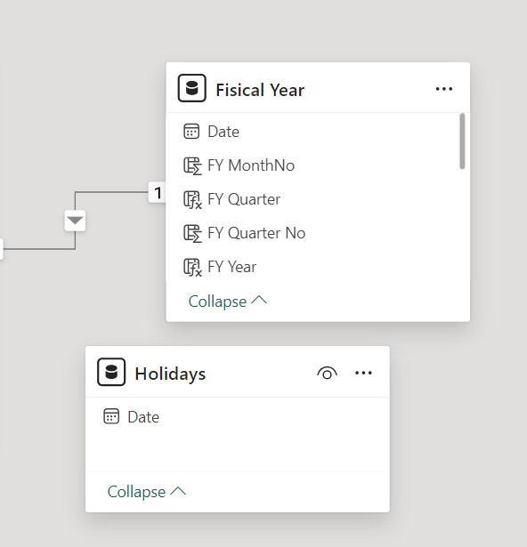
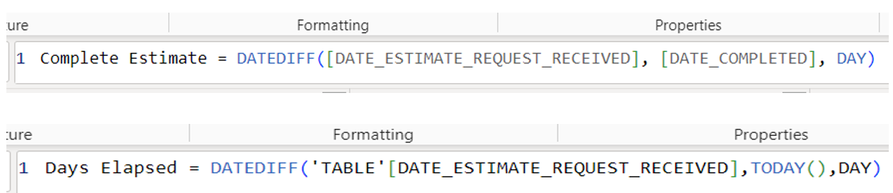
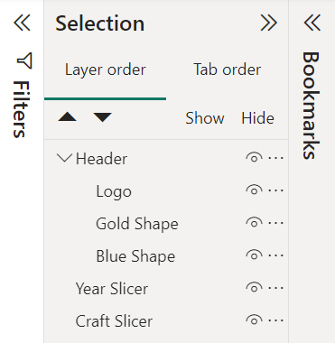
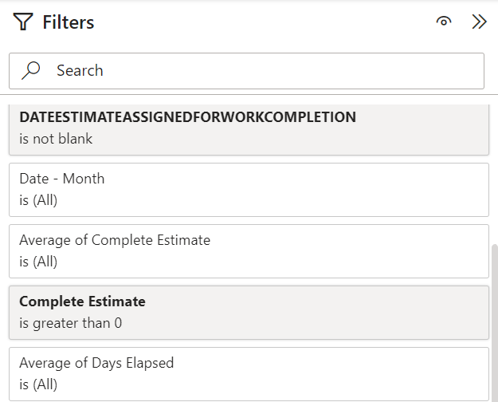
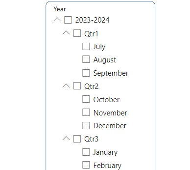
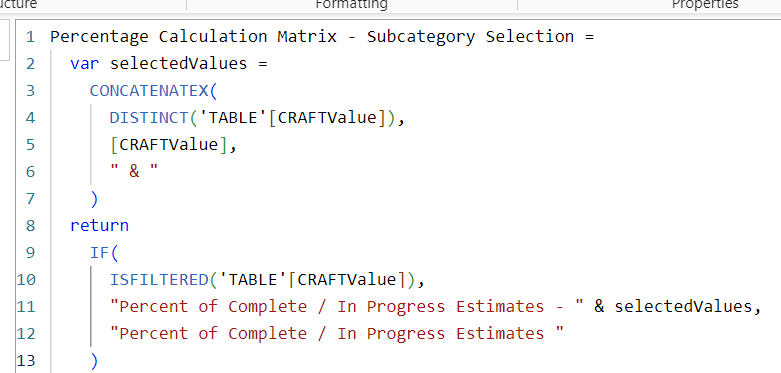
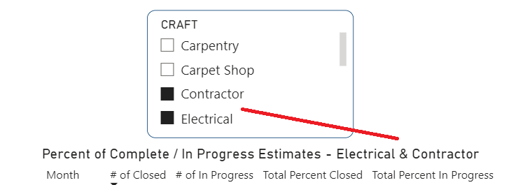
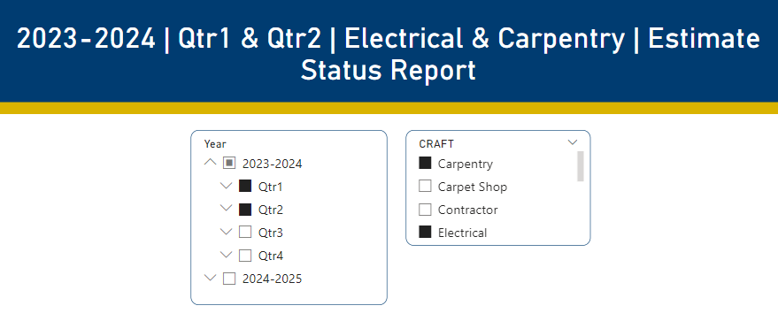

As an Intern for Delete the Divide I had the opportunity to work with LA County's Internal Services
Departments(ISD)
Enterprise Performance & Accountability(EPA) division where I created dynamic data visualizations for
various divisions within ISD.
For my very first project with EPA I was tasked with creating a progress tracking and status dashboard
from estimate data provided by
Maintenence and Operations(M&O) to uncover insights regarding performance.
*Please note that the data used is intended for internal use only and should not be shared with
individuals outside the organization
without prior authorization. As a result, I will refrain from presenting actual results derived from the
data and instead I will
concentrate on my overall process in designing and creating the dashboards.*
Objective:
In this tracking progress and status analysis the aim is to calculate and report the average age and
status of tasks. This is important
as we want to gain a comprehensive view of our efficiency so that we can make informed decisions to
optomize workflow.
Key Metrics and KPIs:
- Average Age of Complete Estimates
- Average Age of In Progress Estimates
- # of Closed Estimates
- # of Open Estimates
- Total Percent Closed
- Total Percent Open
Data Collection:
The data was provided by M&O through an Excel Spreadsheet. The data was cleaned using Excel's various
built-in functions and features. Errors were fixed such as duplicates and missing values using conditional
formatting and functions such as COUNTBLANK() and ISBLANK().
Data Connection:
Imported the Excel Spreadsheet into Power BI and small scale data transformation was done to verify
once more that the data is ready to use. Another seperate Excel Spreadsheet imported into Power BI
was a file containing federal holidays.
Data Modeling:
- Created a calendar table that contains dates using DAX. The calculation used a self-decided
start date and an end date set to the latest present date.
- Date hierarchy was adjusted to accommodate our desired fiscal year which starts in July as
opposed to the default value January. This allowed us to drill down the hierarchy more accurately
(Year -> Quarter -> Month -> Day).
- Relationships were created between the calendar table on the date field and the dateEstimateRequestRecieved field of
the estimate data table.
- Utilized DAX functions to add new columns that calculate the days between two dates using DATEDIFF(), and subsequently
created measures based on these columns. These measures were then used for further calculations incorporating conditional
logic. Specifically, I calculated the duration between a start date and an end date to provide a complete estimate, and
determines the age of an estimate by measuring how many days have passed since the day an estimate request was received
up to today, indicating how long a task has been pending.

How I created a calendar table using DAX.

In Model View I created a relationship between the Date field of my Fiscal Year table and the
dateEstimateRequestRecieved field of estimate data table.

DAX function to calculated the cycle time to complete an estimate and the age of an
estimate to determine how long a task has been pending.
*Hover over an image (desktop) or tap on an image (mobile) to view it's attached description.*Select an image to open in a new tab to inspect further (desktop only).
Designing the Dashboards:
- Developed a visual that represents each KPI and metric that I was tasked with. I utilized card and matrix
visuals that were customized using a variety of formatting options.
- Created a header with ISD's colors and official logo using shapes and the grouped them together in the selection pane.
Grouping these elements ensures easier management and consistent positioning.
- The layer order was adjusted to guarantee that certain elements would not bocker other elements. For example,
the header would be set as the topmost layer. This enhances the overall visual coherence.

Selection pane where I grouped elements and aranged the layer order.
*Hover over an image (desktop) or tap on an image (mobile) to view it's attached description.*Select an image to open in a new tab to inspect further (desktop only).
Adding Interactivity:
- Developed a visual that represents each KPI and metric that I was tasked with. I utilized card and matrix
visuals that were customized using a variety of formatting options.
- Added filters to certain visuals through the Filters pane. Advance filtering on the visuals for where the calculation Complete Estimate is greater than 0
and for when the field dateestimateassignedforworkcompletion is not blank. We want to soley focus on meaningful data and to avoid misleading
visualizations.
- Added slicers to dynamically filter data, including options for fiscal year and craft. We can drill down into the year slicer to view data
at the quarter and month levels.
- Implemented dynamic headers and titles that update based on selections made in the available slicers. This enhances clarity and presentation as it helps users understand
what data they are looking at and demonstrates attention to detail and usability.

Filter pane where advance filtering was done on the matrices to avoid misleading results.

Year slicer showcasing the change in date hierarchy. The fiscal year starts in July as opposed to the default January.

A code snippit of how dynmaic titles were implemented on a visual.

The visual titles change depending on the craft slicers due to the dynamic titles implemented. Single and multiple selections allowed.

The dashboard headers change depending on the year, quarter, and craft slicers due to the dynamic headers implemented. Single and multiple selections allowed.
*Hover over an image (desktop) or tap on an image (mobile) to view it's attached description.*Select an image to open in a new tab to inspect further (desktop only).
Review:
Daily exchanges of emails and conversations occurred with the full-time team member whom I was shadowing. As I received guidance and learned from
their expertise, I developed my own skills and gained confidence in working on these dashboards independently. It was because of this confidence
that I began to research and implement features that I personally found would elevate the dashboards.
Publishing:
Was it published? YES!